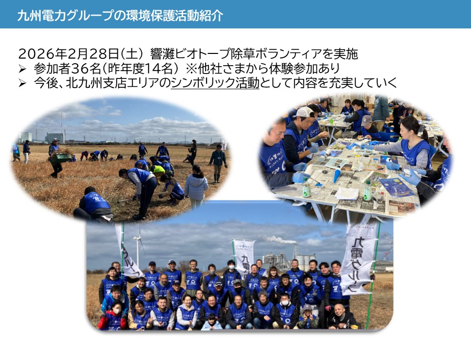

●実施日時
2026年2月28日
●実施場所
響灘ビオトープ
●実施団体
九州電力グループ
●活動内容
「渡り鳥営巣地の除草ボランティア」
九州電力グループ社員により、若松区の響灘ビオトープ敷地内において除草ボランティアを実施しました。
本活動は、渡り鳥が飛来する営巣地の、環境整備の一環で実施したものです。
参加者からは「機会のなかった自然保護活動に接して、貴重な体験が出来た」「改めて環境保護への関心が高まった」といった声が寄せられ、環境意識の醸成に寄与しました。
●自然や地域とのつながり
九州電力株式会社では、環境保全の推進を重要な理念の一つとして位置付け、九州電力グループ全体で継続的な取り組みを進めています。
響灘ビオトープは、かつて廃棄物埋立地であった場所が、長年の取組みにより多様な動植物が生息する自然環境へと再生された貴重な空間であり、環境省の「自然共生サイト」にも認定されています。工業地帯にありながら、自然と静寂を感じることのできる、北九州を代表する環境拠点の一つであるが、当該活動を通じて、当社グループはこのような環境の保全・維持に関わることが出来ました。また、今後の環境保護活動の展開に資する有意義な取り組みとなりました。
●今後の展望
今後も響灘ビオトープの協力を得ながら、当該自然環境保護活動に継続して取り組むとともに、その価値や魅力の認知拡大を図ります。
あわせて、この貴重な環境を次世代へ引き継いでいくための一助となることを目指します。
